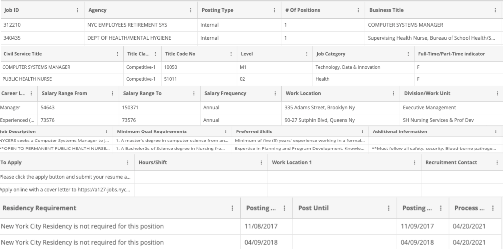
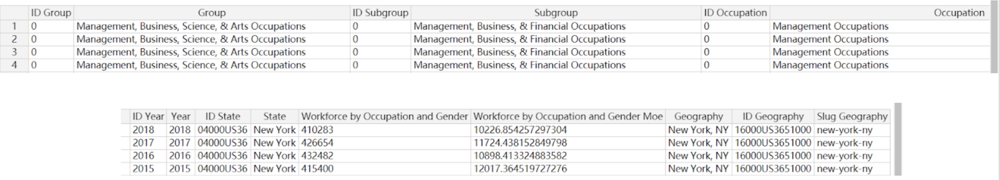
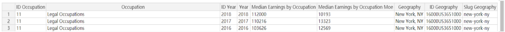

This project analyzes both the NYC employment by occupations and NYC government job offerings to find the relative statistics such as job categories, number of positions offered and salary information.
Big Data Abalysis
Team Project
Data Profiling & Cleaning, Data Analysis
Hadoop MapReduce, Spark, Tableau
Finding a good job after graduation has always been a great concern for almost every college student. Therefore, our team decided to conduct an analysis with the data about NYC employment to get an insight of the current New York City employment market. Along our process of finding datasets, we have also found a comprehensive dataset about NYC government job offerings. This dataset enables us to take a look at the structure of government works and how it is related to the job market of the whole New York City. We hope that by our analysis, different groups of people -- Possible employees who is seeking a job in NYC, employers who want to see what competitions they might have in offering jobs, and official departments which can potentially adjust their hiring policy according to the trend in NYC job market -- can find some useful information to make better strategy and decisions.
This dataset contains job postings available on the City of New York's official jobs site from 2011 to 2021. (Link to data source)
This dataset contains the workforce of each occupation in New York from 2013 to 2018. (Link to data source)
This dataset contains the median income of each occupation in New York from 2013 to 2018. (Link to data source)
Link to Github Srouce Code
Building Operations & Maintenance is the most demanding category of jobs within government (shown in Fig.1-1,) with Public Safety, Inspections & Enforcement, Legal, and Health taking the second, third, and fourth positions. This result is also confirmed by checking positions provided by each agency within the government with the Department of Parks & Recreation, NYC Housing Authority, and Department of Health/Mental Hygiene ranked in the top three.
Positions offered by the government were increasing each year from 2011 to 2021 (shown in Fig.1-2.) The increase became faster from 2017 to 2020, compared to previous years. Moreover, the newly posted positions rocket in 2021, which indicates that Covid-19 is not negatively affecting the job offerings, while instead creating more chances for the job seekers.
A static growth in maximum salary among all jobs is shown(shown in Fig.1-3.) Some dips on the graph might be caused by other factors. For example, job categories that are highly paid might not be posted in a specific year. Moreover, the pay level of the whole government system would be dependent on the financial situation of New York City each year.
From Figure 2-1, we can see that the occupation with the most median salary is always legal occupations. It averages around 105K and is increasing every year. The occupation with the least median salary is mostly personal care & service except for 2014 where farming, fishing and forestry had a sudden drop. While farming, fishing and forestry median salary is usually higher than personal care & service, in 2014 it dropped drastically and became the least. However, even the lowest median salary jobs increased every year from 2013 to 2018. The highest and lowest median salary occupations we got makes sense because legal occupations are usually known to have a high salary. Furthermore service occupations tend to have lower salaries compared to other occupations. The drop in salary from farming, fishing and forestry are likely due to the industry's condition of that year.
Employment in all groups was increasing from 2013 to 2017. However, the workforce in sales and office decreased from 2017 to 2018. (Shown in Fig. 2-2.) As said before, sales and retail workforce decline is most likely due to online retailers. This also matches the report we found in NYC Employment Trends. We also found out that natural resources, construction and maintenance occupations have the least workforce. This is likely because these occupations don't need too much workforce in order for the city to function. In addition, the jobs in these occupations can be finished in a relatively short amount of time and the employees can move on to the next job.
The occupations with top workforce are office & administrative Support, management, sales, education, business. On the other hand, the occupations with the least workforce are farming, fishing, science that are not computer related, law enforcement, rchitecture, installation and maintenance. (Shown in Fig. 2-3.) This corresponds to our idea of New York City. It is a populous modern city where a lot of headquarters of big companies are located. Therefore the workforce for management, sales, and business is higher than other occupations. NYC also has a handful of famous schools and colleges so the workforce of education occupations is one of the top ones too. Again, the occupations of the least workforce are usually ones that don't require too much workforce and are relatively agile.
By integrating the analytical results of the two different data sources we derived some relationships between them.
With respect to the categories of jobs, we have surprisingly found that while Construction & Maintenance is the group with lowest workforce across New York City, the NYC Government offering data implies a high demand for hiring people for building operations and maintenance. On the one hand, the demand for primary construction from the government might give a clue that New York City is lacking this group of workforce. From another perspective, this difference between the two datasets might imply that the government has a different employment structure compared to the rest of the city.
With respect to the wage level, we also noticed some difference between the government and the whole NYC employment situation. Since the government dataset provides us with minimum and maximum salary information and the NYC employment, on the other hand, gives the median salary, we can only do a rough estimation with our analytical result. However, by comparing the minimum wage of different jobs within the government to the median salary of different jobs across New York City, we can see a general higher salary standard among different jobs offered by the official government. Working for the New York City government can be a very lucrative career choice.
In conclusion, we analyzed the employment and salary of New York City as a whole and from the official job postings. From the dataset of New York Employment, we can see that both the workforce and salary are mostly increasing with few exceptions. We also found the occupations with the highest and lowest salary and workforce in New York. The government job offerings, similarly, indicates an increase in positions provided and salary standard over recent years. Some more detailed information about different categories of jobs is also analyzed along the process.Both datasets give us some insights about what the employment situations have been in NYC in recent years.
However, one limitation of our analysis is the fact that the two datasets are not joined together with each other using the big data tools. The fact of their totally different schemas and columns make it harder to accomplish the goal. For future improvement, it would be good if we can clean and reorganize our datasets in a way that they could be efficiently joined together. Moreover, we hope that in the future, employment data from different cities and states across the United States could be analyzed so that a more comprehensive sight about employment situations in America can be gained .